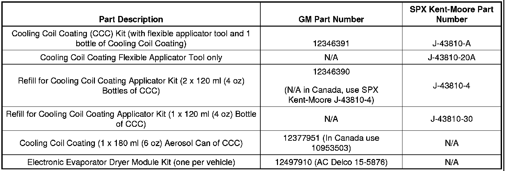
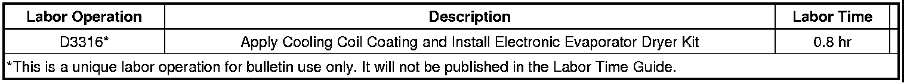

A/C - Musty Odors Emitted From (HVAC) System
TECHNICALBulletin No.: 99-01-39-004D
Date: August 10, 2011
Subject: Air Conditioning Odor (Install Evaporator Core Dryer Kit and Apply Cooling Coil Coating)
Models:
2012 and Prior GM Passenger Cars and Trucks
All Equipped with Air Conditioning
Supercede:
This bulletin is being revised to add the 2011 and 2012 model years. Please discard Corporate Bulletin Number 99-01-39-004C (Section 01 - HVAC).
Condition
Some customers may comment about musty odors emitted from the Heating, Ventilation and Air Conditioning (HVAC) system at vehicle start-up in hot, humid conditions.
Cause
This condition may be caused by condensate build-up on the evaporator core, which does not evaporate by itself in high humidity conditions. The odor may be the result of microbial growth on the evaporator core. When the blower motor fan is turned on, the microbial growth may release an unpleasant musty odor into the passenger compartment.
There are several other possible sources of a musty odor in a vehicle. A common source is a water leak into the interior of the vehicle or foreign material in the HVAC air distribution system. Follow the procedures in SI for identifying and correcting water leaks and air inlet inspection.
The procedure contained in this bulletin is only applicable if the odor source has been determined to be microbial growth on the evaporator core inside the HVAC module.
Correction
Many vehicles currently incorporate an afterblow function within the HVAC control module software. The afterblow feature, when enabled, employs the HVAC blower fan to dry the evaporator after vehicle shut down and this function will inhibit microbial growth. Technicians are to confirm that the customer concern is evaporator core odor and that the vehicle has the imbedded afterblow feature, as defined in the SI document for that specific vehicle model, model year and specific HVAC option. Refer to SI for enabling the afterblow function. Vehicles being delivered in areas prone to high humidity conditions may benefit from having the afterblow enabled calibration installed prior to any customer comment.
Important
If the vehicle is not factory equipped with the imbedded afterblow enable feature, it may be added with the Electronic Evaporator Dryer Module Kit (P/N 12497910 or AC Delco 15-5876).
Important
When installing the Electronic Evaporator Dryer Module, you MUST use the included electrical splice connectors to ensure a proper splice. Complete detailed installation instructions and self testing procedures are supplied with the kit. If necessary, the Electronic Evaporator Dryer Module may be installed underhood if it is protected from extreme heat and water splash areas.
To immediately remove the evaporator core odor on all suspect vehicles, it is necessary to eliminate the microbial growth and prevent its re-occurrence. To accomplish this, perform the following procedure:
Vehicle and Applicator Tool Preparation
1. The evaporator core must be dry. This may be accomplished by disabling the compressor and running the blower fan on the recirc heat setting for an extended period of time.
Note
Compressor engagement will cause the evaporator core to remain wet and will prevent full adherence of the Cooling Coil Coating to the evaporator core surfaces.
2. Verify that the air conditioning drain hose is not clogged and place a drain pan beneath the vehicle.
3. Place a protective cover over the carpet below the evaporator core.
4. Remove the cabin air filter, if equipped, and cover the opening prior to applying the Cooling Coil Coating, as the product may clog the filter. If the cabin air filter appears to have little or no remaining life, suggest a replacement to your customer.
5. If the HVAC module has a blower motor cooling tube, be careful NOT TO SPRAY THE COOLING COIL COATING INTO THE BLOWER MOTOR COOLING TUBE.
6. Attach the Flexible Applicator Pressure Spray Tool (J-43810-20A) to a compressed air line operating at 586 kPa (85 psi) to 793 kPa (115 psi).
7. Shake the bottle of Cooling Coil Coating well. Screw the bottle onto the cap on the applicator tool's pick-up tube.
Note
The pick-up tube is designed for 120 ml (4 oz) and 240 ml (8 oz) bottles and should coil slightly in the bottom of a 120 ml (4 oz) bottle.
8. Use one of the following three methods to apply the Cooling Coil Coating.
Important
If the Pressure Applicator Spray Tool (J-43810-20A) is not available, the Cooling Coil Coating is also available in an aerosol can (P/N 12377951 (in Canada, 10953503)).
Application Through Blower Motor Control Module Opening
- Remove the blower motor control module (blower motor resistor). Refer to the applicable procedure in SI.
- Clean any debris or foreign material from inside the HVAC module and on the evaporator core surface.
- Apply the Cooling Coil Coating directly to the evaporator core through the blower motor control module (blower motor resistor) opening.
- Use the flexible wand to direct the Cooling Coil Coating over the entire evaporator core and surrounding gasket surfaces.
- When the application is complete, install the blower motor control module (blower motor resistor).
Application Through Blower Motor Opening
- Remove the blower motor. Refer to the applicable blower motor removal procedure in SI.
- Clean any debris or foreign material from inside the HVAC module and on the evaporator core surface.
- Apply the Cooling Coil Coating directly to the evaporator core through the blower motor opening.
- Use the flexible wand to direct the Cooling Coil Coating over the entire evaporator core and surrounding gasket surfaces.
- When the application is complete, install the blower motor.
Application Through a Hole in the HVAC Module
- If neither of the two previous application methods are available, it may be necessary to drill a hole in the HVAC module.
- Locate an area of the HVAC module between the blower motor and the evaporator core. Drill a 10 mm (3/8 in) hole in the HVAC module. Use caution to keep the drill clear of the evaporator core and the blower motor fan.
- With the air distribution vents closed and the blower motor fan speed on HIGH, insert the applicator tool into the hole and spray the Cooling Coil Coating into the airstream toward the evaporator core.
- Use a GM approved RTV sealant to plug the hole in the HVAC module.
9. After the Cooling Coil Coating application is complete, start and run the vehicle for approximately 10 minutes, with the compressor disabled, HVAC mode set to Recirculate/Max, heat set to full warm, blower motor fan speed on high, and one window open approximately 12 mm (1/2 in). This cures the Cooling Coil Coating onto the evaporator core surface.
10. While the engine is running, rinse the applicator tool with warm water to prolong the life of the tool. Be sure to spray warm water through the nozzle to rinse out any residual Cooling Coil Coating still in the capillary pick up tube, otherwise it will dry and clog the applicator tool. Also remove the small green valve from the bottle cap and rinse it thoroughly while rolling it between two fingers and then reinstall it. If this valve is clogged , the Cooling Coil Coating will not flow through the applicator tool.
11. Shut off the engine and enable the compressor again.
12. Verify proper HVAC system operation.
13. Remove the protective cover from inside the vehicle.
14. Remove the drain pan from underneath the vehicle.
15. Reinstall the cabin air filter if necessary.
Parts Information
Important
The Cooling Coil Coating listed below is the only GM approved product for use under warranty as an evaporator core disinfectant and for the long term control of evaporator core microbial growth.

Warranty Information

For vehicles repaired under warranty, use the table.

Disclaimer